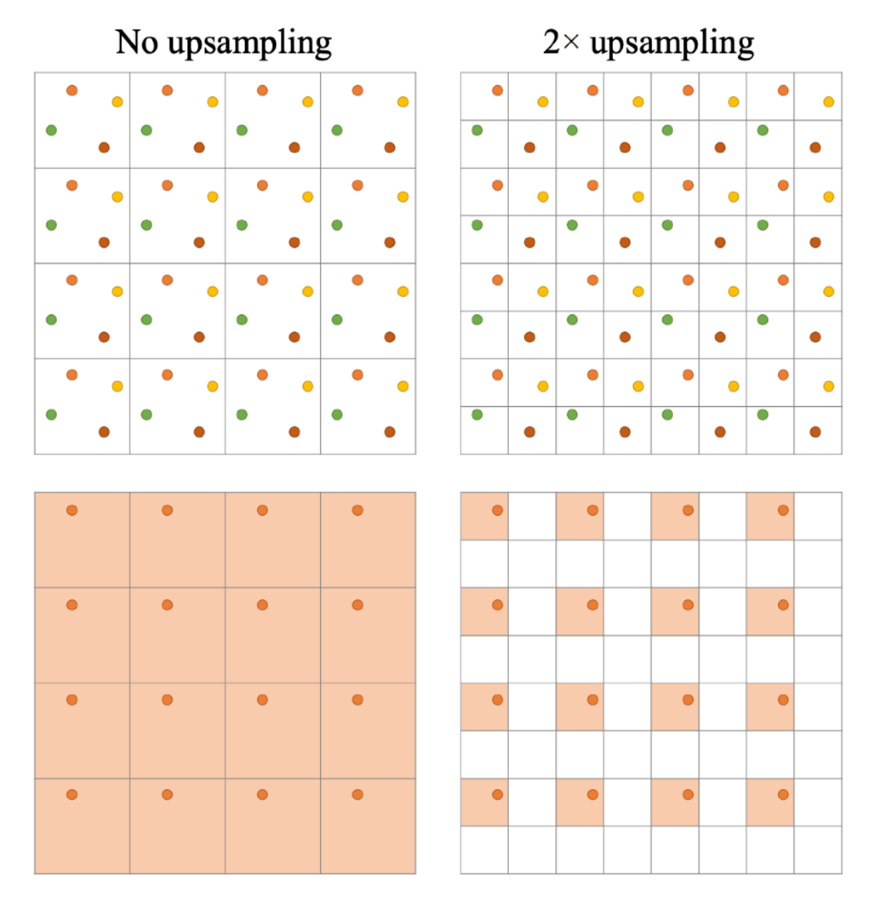
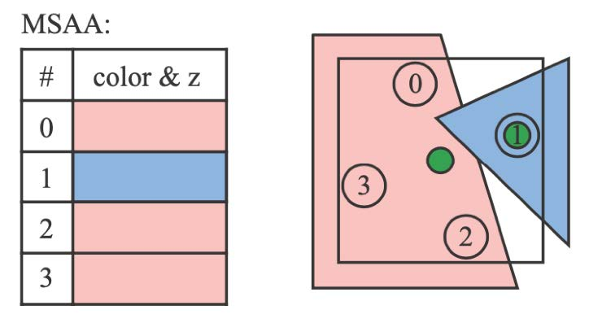
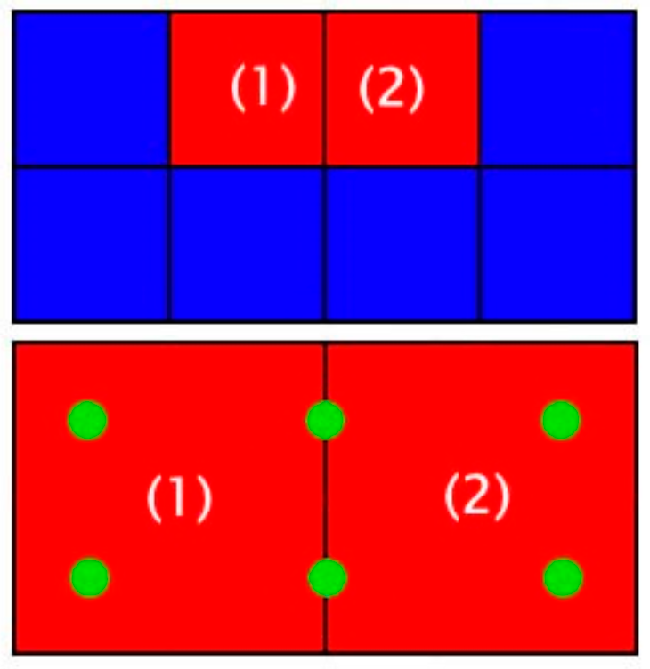
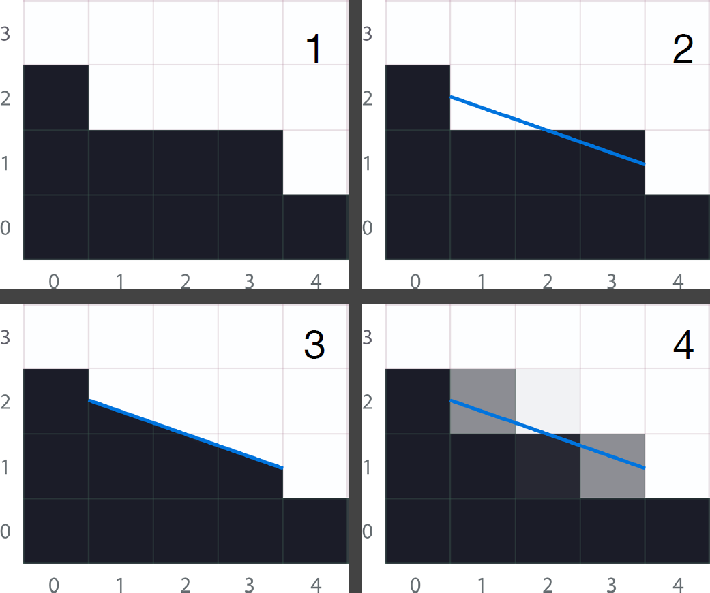
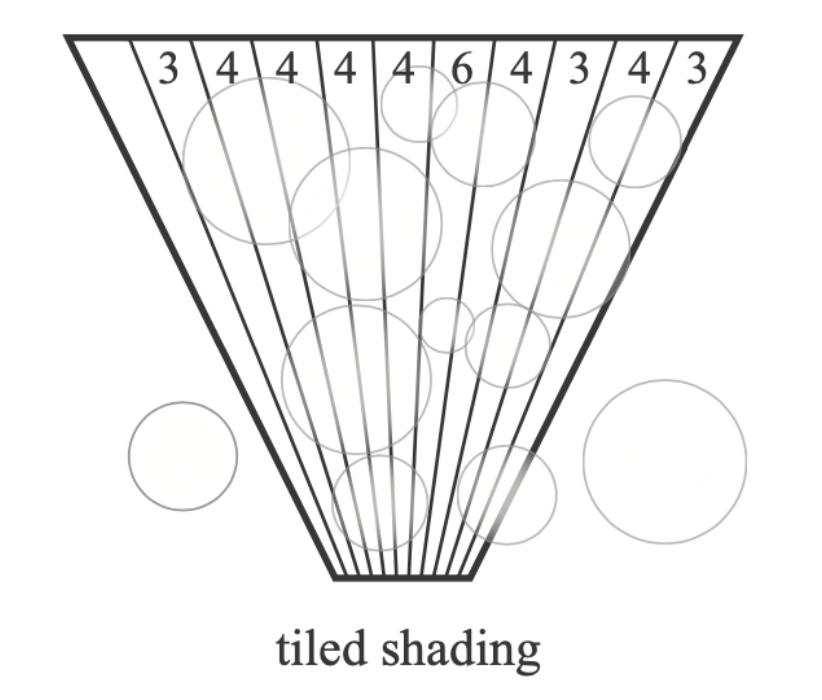
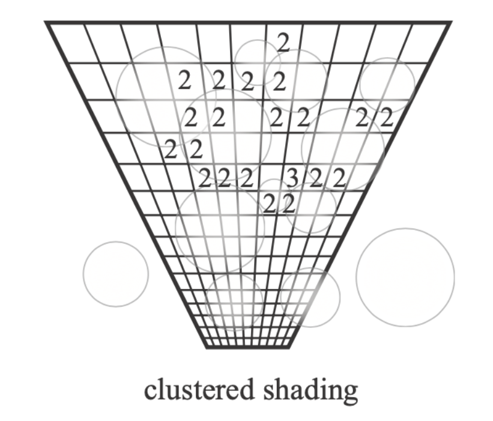
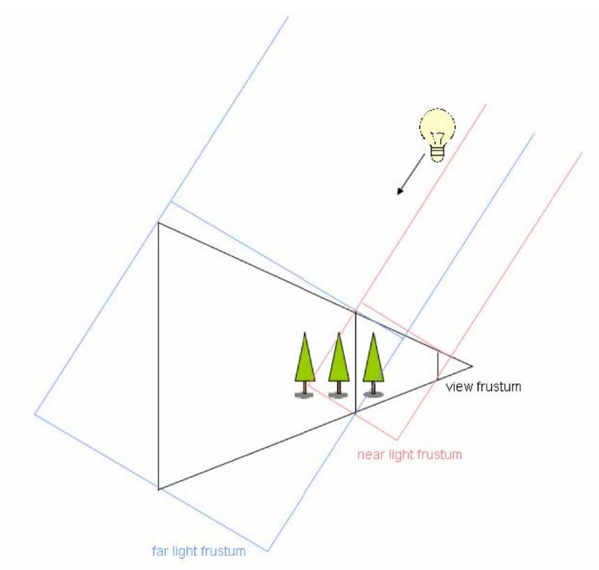
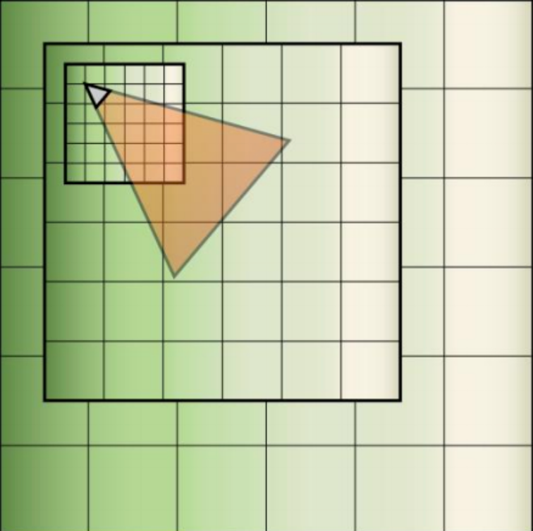

Lecture 14 Practical Industrial Solutions
Temporal Anti-Aliasing, TAA
Recall: why aliasing
- 光栅化的采样数不够
- 终极解决方案：加样本（MSAA）
TAA：应用Temporal信息，与RTRT的降噪思路一致
每四帧复用：

（如果不是4个固定位置而是是随机生成，引入了其他高频信息，效果并不好）
Notes on AA
- MSAA vs SSAA
- SSAA：按几倍分辨率渲染场景，再下变换，效果好开销大
- MSAA：对SSAA的效率改进
- 对一个像素内的一个Primitive，只采样一次（取中心或其他代表点） 
- 空间上的Sample Reuse：样本分布上的Trick 
- 基于图像的反走样方法
- SMAA, Enhanced Subpixel Morphological AA
- FXAA -> MLAA(Morphological AA) -> SMAA 
- G-Buffer一定不能反走样！（信息会出错）
Temporal Super Resolution
Super resolution == Super sampling
- 提升分辨率
- eg. DLSS
- DLSS 1.0 全靠猜，每个游戏/场景单独训练一个网络
- DLSS 2.0 利用Temporal信息
- 应用类似TAA的思路
- 重用Samples
- 问题：Temporal failure时不能clamp——因为每一个像素需要一个明确的值
- DL不输出图像，而是输出关于上一帧的Temporal信息如何利用
Deferred Shading 延迟渲染
- 提高Shading效率
- 传统管线
- Triangles -> Fragments -> Depth Test -> Shading -> Pixel
- 每一个Fragment都需要做Shading
- 复杂度：\(O(\text{\#Fragment}*\text{\#Light})\)
- 关键想法：有很多Fragment不会被看到 -> 只对被看到的Fragment做Shading
- 修改管线
- 光栅化两次场景
- Pass 1 : 不做Shading，更新Depth Buffer
- Pass 2 : 对可见的Fragment做Shading
- 复杂度：\(O(\text{\#Vis.Fragment}*\text{\#Light})\)
- 问题：难以做AA，可以用TAA/图像AA
- 【疑惑：延迟渲染更广义地应该是指两次光栅化，一次记录G-Buffer，一次着色的渲染方式？这里闫老师只讲了深度Buffer的应用。】
Tiled Shading
- 在Deferred Shading基础上，考虑减少光源的复杂度
- 把屏幕分成Tile 减少了每一个Tile中光源的数量：光源强度距离平方衰减（设定半径范围内有效）
- 复杂度：\(O(\text{\#Vis.Fragment}*\text{avg(\#Light per tile)})\)

Clustered Shading
- 在Tiled Shading基础上，把空间分成网格
- 进一步减少了需要计算的光源数量
- 复杂度：\(O(\text{\#Vis.Fragment}*\text{avg(\#Light per cluster)})\)

LoD, Level of Detail Solutions
- 在工业界，也称这种思路为“Cascaded”
- eg. Cascaded Shadow Maps 离Camera越远的，用更粗糙的Shadow Map 
- eg. Cascaded LPV 传播越远，用更粗的格子传播 
- Geometric LoD
- 困难：过渡的Blending，可以用TAA
- eg. Nanite in UE5
Global Illumination Solutions
- SSR的问题（参考相关章节）
- 用Ray Tracing解决
- 软件Tracing
- SDF Trace, HQ for individual obj, SQ for global
- RSM 方向性/点光源
- 空间网格中存储Irradiance的Probe（DDGI, Dynamic Diffuse GI）
- 硬件Tracing
- 用简化模型Tracing
- RTXGI
- eg. Lumen in UE5：加粗条
- 软件Tracing
More Topics
- Texturing an SDF
- 透明材质，透明材质的渲染顺序
- Particle Rendering
- Post Processing
- 随机数/蓝噪声
- Foveated Rendering
- Probe based GI (DDGI/RTXGI…)
- ReSTIR, Neural Radiance Caching …
- 多光源理论，Light Cuts
- Participating Media, SSSSS
- Hair
- …